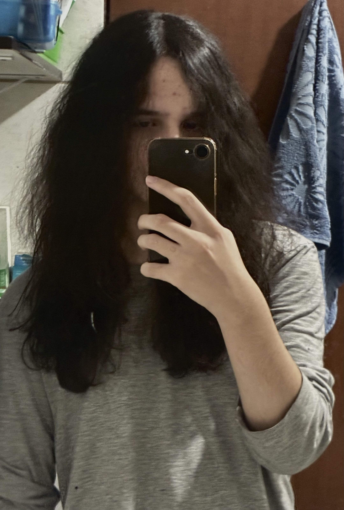

Sobre Mim
Hello World!
Me chamo Antonio Vedana, nascido em 14 de junho de 2009, em Porto Alegre (RS). Atualmente, curso o Ensino Médio integrado ao Técnico em Desenvolvimento de Sistemas no SESI-SENAI de Florianópolis, estando no terceiro ano. Tenho interesse por exatas e tecnologia desde a infância, o que me levou a estudar programação de forma autodidata a partir dos 12 anos. Trabalho com Python e JavaScript, além de HTML e CSS para desenvolvimento web. Busco me tornar desenvolvedor back-end ou full-stack, com foco em aplicações web.
Além da programação, tenho interesse por música (toco guitarra e coleciono vinis) e pelo aprendizado de idiomas. Sou fluente em inglês (C2) e possuo proficiência em esperanto (B2). Também leio sobre política, economia e filosofia.
